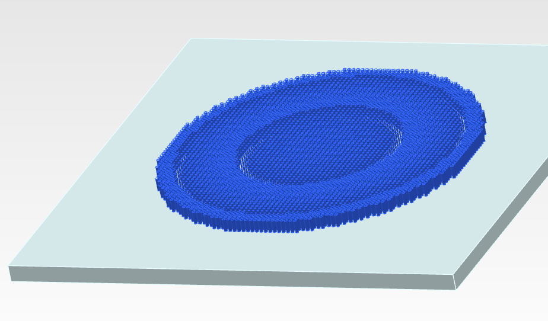
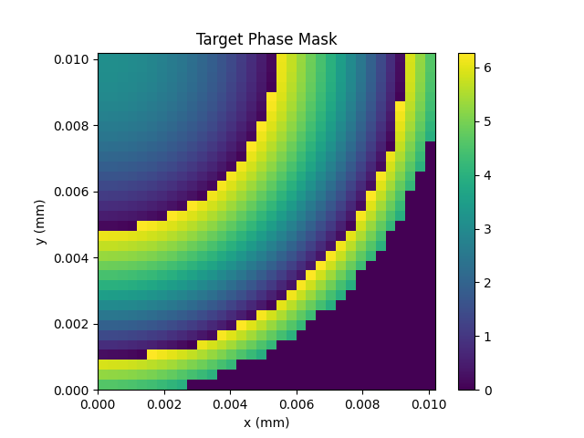
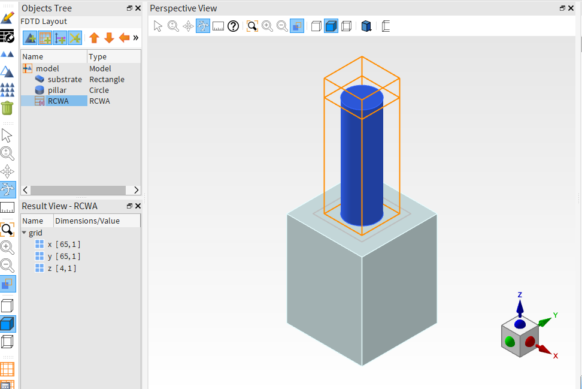
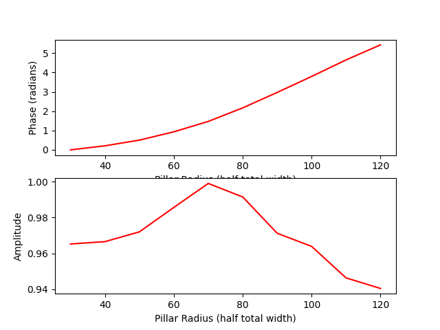
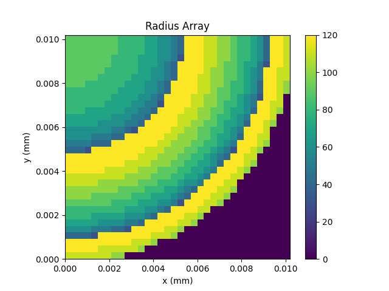
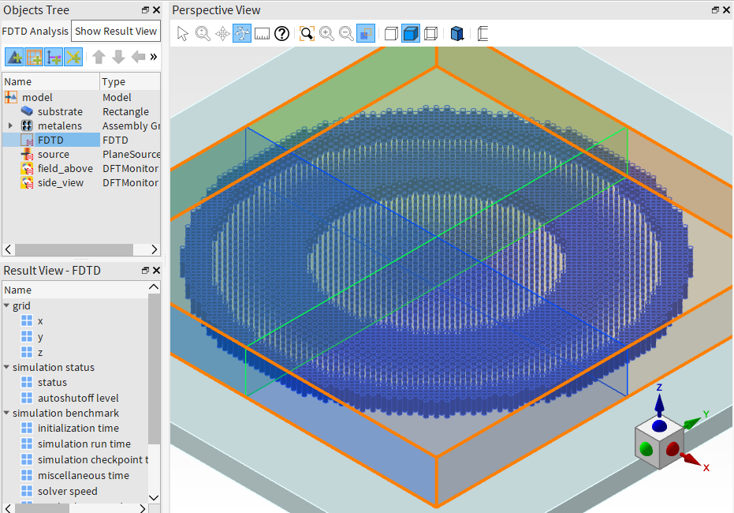
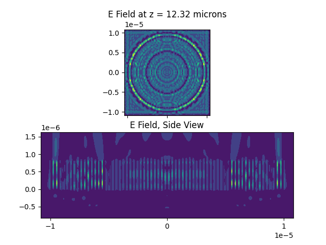
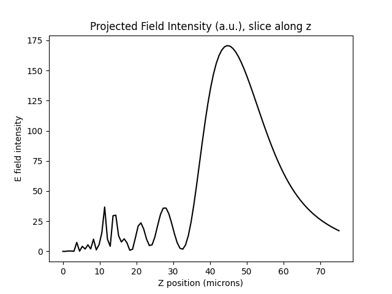
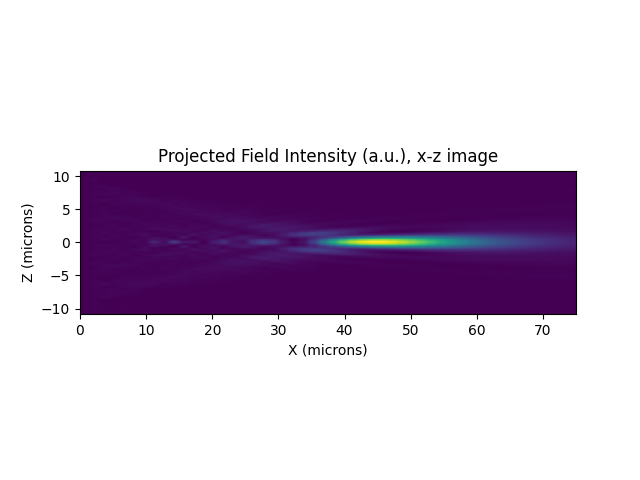

PyLumerical Metalens (FDTD)#
This example automates design and simulation of a metalens using Ansys Lumerical FDTD. A metalens is an array of pillars, also called unit cells or meta-atoms, that are arranged across a surface to create a macroscopic optical element. Each unit cell locally adjusts the phase of the light, and by arranging the unit cells across the surface, a global phase profile can be achieved. Typically, this phase profile is designed to act as a lens.
In this example, we use Python to automate metalens design and simulation. We follow a standard approach of separately designing a target phase profile and a suitable library of unit cells under periodic boundary conditions. A target phase profile at a specific design wavelength must be provided; this can come from theory or an optimized phase profile from Zemax or another design process can be imported. The unit cell library is designed and simulated in Lumerical RCWA. Once the target phase profile and unit cell library are determined, we loop through each location on the phase profile and select the unit cell from the library that best matches the target phase at that location. The complete metalens is constructed in Lumerical FDTD using the Assembly Group object (https://optics.ansys.com/hc/en-us/articles/23889799301523-Assembly-Groups-Simulation-Objects). Please note that simulating large metalenses may require significant RAM; please check memory requirements prior to running Step 3 for full FDTD simulation.
Part 0: Perform required imports and specify design parameters. Units are meters unless otherwise specified.

[ ]:
1# Import required modules
2
3from collections import OrderedDict
4
5import matplotlib.pyplot as plt # Recommended, but only required for plotting
6import numpy as np
7
8import ansys.lumerical.core as lumapi
[ ]:
9# Global design parameters
10
11# Constants for units
12mm = 1e-3
13um = 1e-6
14nm = 1e-9
15c = 3e8
16
17target_wavelength = 550 * nm # Specify the design wavelength. The unit cells will be most closely matched to the target at this wavelength.
18polarization = "S" # Returns S or P results; they are the same for symmetric unit cells at normal incidence
[ ]:
19# Unit cell specifications
20
21period = 300 * nm # Unit cell periodicity. This MUST be the same as the grid spacing of the target phase profile.
22height = 800 * nm # All pillars the same height
23shape = "circle" # Specify 'circle' or 'square'
24min_feature_size = 30 * nm # Optional; sets a minimum pillar / gap size for the unit cell library
25num_pillars = 50 # Sets the number of unique pillar sizes in the library
26
27# Set materials
28# Use the exact spelling of a material from the Lumerical database.
29pillar_material = "Si3N4 (Silicon Nitride) - Luke" # Use the exact spelling of a material from the Lumerical database
30substrate_material = "SiO2 (Glass) - Palik"
31
32# Specify filename for unit cell simulations - a new file will be created
33unit_cell_filename = "unit_cell_rcwa.fsp"
[ ]:
34# Target phase profile specifications
35
36lens_radius = 10 * um # The overall radius of the lens
37assume_symmetry = True # To save memory, we can work with a quarter circle at a time and bring it back to full lens at the end
38
39# Specify phase profile type - see descriptions of three functions below
40# Option 1: Spherical phase (specify desired focal length and wavelength)
41# Option 2: Zemax Binary-2 phase (copy and paste optimized coefficients from Zemax)
42type_lens = "spherical" # Specify "spherical" or "Binary2"
43
44# For spherical and cylindrical lenses - specify focal length. Not used for Binary2.
45focal_length = 50 * um
46
47# Copy parameters from Zemax for Binary2
48norm_radius = 100 * mm # Normalization radius
49# Copy a list of the p^2 coefficients from Zemax
50zemax_coeffs = [-2.279343664281709e006, -3.943219031309796e006, 8.648523491639540e009, -1.743623426550141e012]
Part 1: Create target phase mask
[ ]:
51# Define functions to generate target phase
52# Here, R = X^2 + Y^2 is the radial coordinate
53
54
55def get_spherical_phase(x, y, focal_length, wavelength):
56 """Specify a design wavelength and target focal length at that wavelength."""
57 phase = (2 * np.pi / wavelength) * (focal_length - np.sqrt(x**2 + y**2 + focal_length**2))
58 phase = phase - np.amin(phase) # remove constant offset
59 phase = phase % (2 * np.pi) # Take modulo 2pi
60 return phase
61
62
63def get_binary2_phase(x, y, norm_radius, zemax_coeffs):
64 """Copy and paste Binary2 coefficients from Zemax; focusing behavior will be determined from those."""
65 numterms = len(zemax_coeffs)
66 r = np.sqrt(x**2 + y**2)
67 phase = r * 0
68 for n in range(0, numterms):
69 phase = phase + (zemax_coeffs(n) * (r / norm_radius) ** (2 * n))
70 phase = phase - np.amin(phase) # remove constant offset
71 phase = phase % (2 * np.pi) # Take modulo 2pi
72 return phase
73
74
75def circularize(phase_mask, assume_symmetry): # Applies a circular mask to the phase.
76 """Apply a circular mask to the target phase array.
77
78 If assume_symmetry is True, then we shift the center of the circle to the corner.
79 """
80 mask_width = phase_mask.shape[0]
81 mask_height = phase_mask.shape[1]
82 if assume_symmetry:
83 center = (0, 0) # center is at index 0,0 - this is not spatial location
84 mask_rad = min(mask_width, mask_height)
85 else:
86 center = (int(mask_width / 2), int(mask_height / 2))
87 mask_rad = min(center)
88 mask_grid = phase_mask * 0
89 for n in range(0, len(mask_grid)):
90 for m in range(0, len(mask_grid[n])):
91 distance = np.sqrt((n - center[0]) ** 2 + (m - center[1]) ** 2)
92 if distance <= mask_rad:
93 mask_grid[n, m] = 1
94 return phase_mask * mask_grid
[ ]:
95# Create phase mask grid
96
97if assume_symmetry: # Evaluate only a quarter map
98 x = np.arange(0, lens_radius, period)
99 y = np.arange(0, lens_radius, period)
100else:
101 x = np.arange(-lens_radius, lens_radius, period)
102 y = np.arange(-lens_radius, lens_radius, period)
103
104xx, yy = np.meshgrid(x, y)
[ ]:
105# Calculate and plot phase mask
106
107# In this example, we are using the spherical phase function
108if type_lens == "spherical":
109 target_phase = get_spherical_phase(xx, yy, focal_length, target_wavelength)
110 print("Using spherical phase profile with target f = " + str(focal_length / um) + " microns.")
111elif type_lens == "Binary2":
112 target_phase = get_binary2_phase(xx, yy, norm_radius, zemax_coeffs)
113 print("Using Binary2-type phase profile.")
114else:
115 print("Target phase not specified - please specify the target phase map.")
116
117target_phase_width = target_phase.shape[0] # get size of array
118target_phase_height = target_phase.shape[1] # get size of array
119
120plt.imshow(circularize(target_phase, assume_symmetry), extent=[0, period * target_phase_width / mm, 0, period * target_phase_height / mm])
121plt.colorbar()
122plt.title("Target Phase Mask")
123plt.xlabel("x (mm)")
124plt.ylabel("y (mm)")
125plt.show(block=False)
126plt.pause(5)

Part 2: Create simple unit cell library. Note 1: In this example, we use Lumerical RCWA for speed. However, it is also possible to use FDTD if desired. Note 2: We use a loop in Python to set up and run RCWA simulations for different pillar widths. It is also possible to set up sweeps using Lumerical’s built-in Optimizations and Sweeps tools. To avoid continuously opening and closing instances of Lumerical, we initialize a single instance of Lumerical named ‘rcwa’ and rebuild geometry on each run.
[ ]:
127# create a single RCWA unit cell simulation
128
129
130def single_rcwa(session_name, shape, radius, period, height, pillar_material, substrate_material, wavelength, theta, phi):
131 """
132 Run a single RCWA simulation for a single geometric structure and set of illumination conditions.
133
134 session_name: the name of an existing, open Lumerical FDTD instance
135 Geometry params:
136 shape: The cross-sectional shape of the pillar, either 'circle' or 'square'
137 radius: For circular pillar, the radius. For square pillars, the total pillar width is 2*radius
138 period: The periodicity of the unit cell. Used to set the span of RCWA simulation region
139 pillar_material: The name of the pillar material in Lumerical material database
140 substrate_material: The name of the substrate material in the Lumerical material database
141 Illumination params:
142 wavelength: the simulation wavelength
143 theta: the illumination angle theta, in degrees
144 phi: the illumination angle phi, in degrees
145
146 Returns: phase (in units of 0 to 2pi), amp
147 """
148 # First: check for obvious errors
149 if 2 * radius > period:
150 print("Pillar width exceeds unit cell periodicity! Please check radius and period settings.")
151
152 # Initialize session: switch back to layout and clear existing geometry
153 session_name.switchtolayout()
154 session_name.deleteall()
155
156 Lmax = np.amin(wavelength) # Used to determine vertical span of simulation region
157
158 # Set up objects
159
160 # Substrate
161 session_name.addrect(name="substrate", material=substrate_material, x=0, x_span=2 * period, y=0, y_span=2 * period, z_max=0)
162 n_sub = session_name.getindex(substrate_material, c / wavelength)
163 session_name.set("z min", -2 * Lmax / n_sub)
164
165 # Pillar
166 if shape == "circle":
167 session_name.addcircle(name="pillar", material=pillar_material, x=0, y=0, radius=radius, z_min=0, z_max=height)
168 if shape == "square":
169 session_name.addrect(name="pillar", material=pillar_material, x=0, x_span=2 * radius, y=0, y_span=2 * radius, z_min=0, z_max=height)
170 n_pillar = session_name.getindex(pillar_material, c / wavelength)
171
172 # Set up session_name simulation object - general properties
173 session_name.addrcwa(x=0, y=0, x_span=period, y_span=period, z_min=-0.5 * Lmax / n_sub, z_max=0.5 * Lmax / n_pillar + height)
174 session_name.setnamed("RCWA", "report grating characterization", True)
175
176 # Set the RCWA interface positions. The interface positions are set from the minimum and maximum z positions of the pillar object.
177 # For documentation, see https://optics.ansys.com/hc/en-us/articles/12959229278611-RCWA-Solver-Simulation-Object
178 session_name.setnamed("RCWA", "interface position", "reference")
179 interfaces = [["::model::pillar", "max", 1], ["::model::pillar", "min", 1]]
180 session_name.setnamed("RCWA", "interface reference positions", interfaces)
181
182 # Set RCWA excitation properties
183 session_name.setnamed("RCWA", "use wavelength spacing", True)
184 session_name.setnamed("RCWA", "wavelength center", wavelength)
185 session_name.setnamed("RCWA", "wavelength span", 0)
186 session_name.setnamed("RCWA", "frequency points", 1)
187 # By default, a single incident angle is used; a table or list can be used later instead
188 session_name.setnamed("RCWA", "angle theta", 0)
189 session_name.setnamed("RCWA", "angle phi", 0)
190
191 # Save and run
192 session_name.save(unit_cell_filename) # this file will be overwritten on each run
193 session_name.run() # Run single RCWA simulation
194
195 # Retrieve results
196 gc = session_name.getresult("RCWA", "grating_characterization") # result is returned as Python dict
197 if polarization == "S":
198 amp_results = gc["Tss"] # Result returned vs. theta/phi, orders n and m
199 else:
200 amp_results = gc["Tpp"]
201
202 # Get m and n indices of 0th order
203 m = np.where(gc["m"] == 0)[0]
204 n = np.where(gc["n"] == 0)[0]
205 s0 = amp_results[0, 0, 0, n, m] # wavelength, theta, phi, order n, order m
206 phase = np.angle(s0) + np.pi # returned in radians in the range (-pi, pi]
207 amp = np.abs(s0) ** 2
208
209 return phase[0], amp[0]
[ ]:
210# Test the above function - run a single rcwa simulation and print results
211
212with lumapi.FDTD(hide=False) as rcwa:
213 testphase, testamp = single_rcwa(rcwa, "square", 120e-9, period, height, pillar_material, substrate_material, target_wavelength, 0, 0)
214 print("Phase: " + str(testphase * 180 / np.pi) + " degrees")
215 print("Amplitude: " + str(testamp))

[ ]:
216# Now run a sweep over a range of pillar widths
217
218sweep_res = 10 # Number of points in sweep
219min_pillar = min_feature_size
220max_pillar = 0.5 * period - min_feature_size
221pillar_radius = np.linspace(min_pillar, max_pillar, sweep_res) # list of pillar radius (half total width) to sweep
222
223# Initialize arrays to hold results
224phase_results = pillar_radius * 0
225amp_results = pillar_radius * 0
226
227with lumapi.FDTD(hide=False) as rcwa:
228 for n in range(0, sweep_res):
229 radius = pillar_radius[n]
230 phase_results[n], amp_results[n] = single_rcwa(
231 rcwa, "circle", radius, period, height, pillar_material, substrate_material, target_wavelength, 0, 0
232 )
233
234 # Unwrap and shift phase so smallest pillar is at 0 phase shift
235 phase_results = np.unwrap(phase_results)
236 phase_results = phase_results - phase_results[0]
[ ]:
237# Plot results
238
239plt.subplot(2, 1, 1)
240plt.plot(pillar_radius / nm, phase_results, "r")
241plt.xlabel("Pillar Radius (half total width)")
242plt.ylabel("Phase (radians)")
243
244plt.subplot(2, 1, 2)
245plt.plot(pillar_radius / nm, amp_results, "r")
246plt.xlabel("Pillar Radius (half total width)")
247plt.ylabel("Amplitude")
248
249plt.show(block=False)
250plt.pause(5)

Part 3: Obtain the radius vs. position to match the target phase profile as closely as possible.
[ ]:
251# Phase vs. radius table to use for mapping
252
253radius_array = target_phase * 0 # initialize array
254
255for n in range(0, len(target_phase)):
256 for m in range(0, len(target_phase[n])):
257 difference = np.abs(target_phase[n, m] - phase_results)
258 smallest_difference_index = difference.argmin() # Find the index of the closest phase
259 closest_radius = pillar_radius[smallest_difference_index] # Choose pillar corresponding to that closest index
260 radius_array[n, m] = closest_radius
261
262# Apply the circular mask
263radius_array = circularize(radius_array, assume_symmetry)
[ ]:
264# Plot the design
265
266plt.imshow(radius_array / nm, extent=[0, period * target_phase_width / mm, 0, period * target_phase_height / mm])
267plt.colorbar()
268plt.title("Radius Array")
269plt.xlabel("x (mm)")
270plt.ylabel("y (mm)")
271plt.show(block=False)
272plt.pause(5)

Part 3: Build full metalens in FDTD and analyze results. We use the Assembly Group Object for efficiency.
Note 1: set “pillar rendering detail” to 0 to speed up rendering in viewports. The pillars will appear polygonal in the viewports but it does not change anything in the simulation, it is purely for speeding up rendering in the viewports of the UI. It will not allow a setting of larger than 0.5 (normally 1 is maximum).
Note 2: When using assembly group, structure is not displayed in the viewport if the number of objects exceeds 32000. An index monitor can be used to visualize structures. To hide the FDTD GUI entirely, enter the flag “hide = True”.
[ ]:
273# Set options
274pillar_rendering_detail = 0
275
276# Set filename for saving
277full_lens_filename = "FDTD_metalens_target_" + str(target_wavelength / nm) + "nm.fsp"
[ ]:
278# Initialize session and build simulation objects.
279# We utilize the Assembly Group to build the metalens structure.
280
281with lumapi.FDTD(hide=False) as fdtd:
282 # Substrate rectangle
283 fdtd.addrect(name="substrate", material=substrate_material, x_span=3 * lens_radius, y_span=3 * lens_radius, z_max=0, z_min=-2 * target_wavelength)
284
285 # Metalens pillars - utilizes assembly group
286 # Faster, more efficient, less memory required
287 # Structure is not displayed if number of objects exceeds 32000
288
289 fdtd.addassemblygroup(name="metalens")
290 fdtd.addcircle()
291 fdtd.addtogroup("metalens")
292 fdtd.setnamed("metalens", "parameters", ["x", "y", "radius"])
293
294 # create mapping matrix: length is total number of pillars by 3
295 count = 0 # keep track of index
296
297 print("Building metalens objects...")
298 if assume_symmetry:
299 # Bring back to 4-fold circle if symmetry is used
300 mapping = np.zeros((4 * len(x) * len(y), 3))
301 for n in range(0, len(target_phase)):
302 for m in range(0, len(target_phase[n])):
303 if radius_array[n, m] > 0:
304 mapping[count, :] = [xx[n, m], yy[n, m], radius_array[n, m]]
305 count = count + 1
306 mapping[count, :] = [xx[n, m], -yy[n, m], radius_array[n, m]]
307 count = count + 1
308 mapping[count, :] = [-xx[n, m], yy[n, m], radius_array[n, m]]
309 count = count + 1
310 mapping[count, :] = [-xx[n, m], -yy[n, m], radius_array[n, m]]
311 count = count + 1
312 else:
313 count = count + 4
314 else:
315 # No symmetry - build array exactly
316 mapping = np.zeros((len(x) * len(y), 3))
317 for n in range(0, len(target_phase)):
318 for m in range(0, len(target_phase[n])):
319 if radius_array[n, m] > 0:
320 mapping[count, :] = [xx[n, m], yy[n, m], radius_array[n, m]]
321 count = count + 1
322
323 fdtd.setnamed("metalens", "mapping", np.transpose(mapping))
324 fdtd.select("metalens::circle")
325 # Apply properties to these metalens circles
326 fdtd.set("material", pillar_material)
327 fdtd.set("z min", 0)
328 fdtd.set("z max", height)
329 fdtd.set("detail", np.amin([0, pillar_rendering_detail]))
330 print("Metalens built. Adding remaining simulation objects and saving to file: " + full_lens_filename)
331
332 # Add FDTD region, source, and monitors
333
334 # FDTD region
335 buffer_space = 1.5 * target_wavelength # amount of free space around metalens structure
336 fdtd_geometry_props = {
337 "x": 0,
338 "x span": 2 * (lens_radius + buffer_space),
339 "y": 0,
340 "y span": 2 * (lens_radius + buffer_space),
341 "z min": -buffer_space,
342 "z max": height + buffer_space,
343 }
344 fdtd_boundary_props = {
345 "x min bc": "Anti-Symmetric",
346 "x max bc": "PML",
347 "y min bc": "Symmetric",
348 "y max bc": "PML",
349 "z min bc": "PML",
350 "z max bc": "PML",
351 }
352 # Combine properties settings into one dictionary
353 fdtd_props = OrderedDict({**fdtd_geometry_props, **fdtd_boundary_props})
354 fdtd.addfdtd(properties=fdtd_props)
355
356 # Plane wave source
357 source_geometry_props = {
358 "injection axis": "z",
359 "direction": "forward",
360 "x": 0,
361 "x span": 3 * lens_radius,
362 "y": 0,
363 "y span": 3 * lens_radius,
364 "z": -target_wavelength,
365 }
366 source_frequency_props = {"override global source settings": 1, "wavelength start": 0.4e-6, "wavelength stop": 0.9e-6}
367 source_props = OrderedDict({**source_geometry_props, **source_frequency_props})
368 fdtd.addplane(properties=source_props)
369
370 # Add monitors (top-down and side views)
371 # For the top-down monitor, we will use results to calculate far-field projections.
372 # Therefore, we collect results at one frequency point.
373 monitor_geometry_props = {
374 "name": "field_above",
375 "monitor type": "2D Z-normal",
376 "x": 0,
377 "x span": 3 * lens_radius,
378 "y": 0,
379 "y span": 3 * lens_radius,
380 "z": height + buffer_space / 2,
381 }
382 monitor_frequency_props = {
383 "override global monitor settings": 1,
384 "use source limits": 0,
385 "minimum wavelength": target_wavelength,
386 "maximum wavelength": target_wavelength,
387 "frequency points": 1,
388 }
389 monitor_props = OrderedDict({**monitor_geometry_props, **monitor_frequency_props})
390 fdtd.adddftmonitor(properties=monitor_props)
391 # In the side monitor, we collect results using the global frequency settings.
392 # By default these settings are 5 wavelength points set to match the min and max source frequency.
393 monitor_props = {
394 "name": "side_view",
395 "monitor type": "2D Y-normal",
396 "x": 0,
397 "x span": 3 * lens_radius,
398 "y": 0,
399 "z min": -buffer_space,
400 "z max": height + buffer_space,
401 }
402 fdtd.adddftmonitor(properties=monitor_props)
403
404 # Zoom CAD view around the simulation region
405 fdtd.select("metalens")
406 fdtd.setview("extent")
407
408 # Save to file
409 fdtd.save(full_lens_filename)
410 print("File saved, complete.")
[ ]:
411# Memory check
412
413use_GPU = False
414
415with lumapi.FDTD(full_lens_filename, hide=True) as fdtd:
416 if use_GPU:
417 memory_check = fdtd.runsystemcheck("FDTD", "GPU")
418 max_memory = memory_check["Approximate_GPU_Memory_Requirements"]["Maximum_Bytes"] * 1e-9 # convert to Gb
419 min_memory = memory_check["Approximate_GPU_Memory_Requirements"]["Minimum_Bytes"] * 1e-9 # convert to Gb
420 print("GPU VRAM estimate is " + str(round(min_memory, 2)) + " Gb (min) to " + str(round(max_memory, 2)) + " Gb (max).")
421 else:
422 memory_check = fdtd.runsystemcheck("FDTD", "CPU")
423 recommended_memory = memory_check["Memory_Recommended_Bytes"] * 1e-9 # convert to Gb
424 alerts = memory_check["Approximate_Memory_Requirements"]["Alert"]
425 print("Recommended CPU RAM: " + str(round(recommended_memory, 2)) + " Gb.")
426 print("Alerts: " + alerts)
[ ]:
427# Configure resources and run simulations
428
429with lumapi.FDTD(full_lens_filename, hide=True) as fdtd:
430 # Add CPU/GPU resources
431 cpuRes = fdtd.addresource("FDTD")
432 fdtd.setresource("FDTD", cpuRes, "device type", "CPU")
433 fdtd.setresource("FDTD", cpuRes, "name", "PyLum CPU")
434 gpuRes = fdtd.addresource("FDTD")
435 fdtd.setresource("FDTD", gpuRes, "device type", "GPU")
436 fdtd.setresource("FDTD", gpuRes, "name", "PyLum GPU")
437 fdtd.save(full_lens_filename)

[ ]:
438with lumapi.FDTD(full_lens_filename, hide=False) as fdtd:
439 if use_GPU:
440 print("Running on GPU, starting now.")
441 fdtd.run("FDTD", "GPU", "PyLum GPU")
442 fdtd.save(full_lens_filename)
443 print("File run and saved.")
444 else:
445 print("Running on CPU, starting now.")
446 fdtd.run("FDTD", "CPU", "PyLum CPU")
447 fdtd.save(full_lens_filename)
448 print("File run and saved.")
[ ]:
449# Retrieve and plot results from monitors
450
451with lumapi.FDTD(full_lens_filename, hide=True) as fdtd:
452 E_above = fdtd.getresult("field_above", "E")
453 x, y = E_above["x"], E_above["y"]
454 z = E_above["z"][0][0]
455 Ex, Ey, Ez = E_above["E"][:, :, 0, 0, 0], E_above["E"][:, :, 0, 0, 1], E_above["E"][:, :, 0, 0, 2]
456
457 eFieldAmplitude_top = np.abs(Ex) ** 2 + np.abs(Ey) ** 2 + np.abs(Ez) ** 2
458 X, Y = np.meshgrid(x, y) # Create meshgrid
459
460 fig, (ax1, ax2) = plt.subplots(2, sharex=True)
461 ax1.contourf(X, Y, eFieldAmplitude_top)
462 ax1.set_aspect("equal")
463 ax1.set_title("E Field at z = " + str(np.round(z * 10e6, decimals=2)) + " microns")
464
465 E_side = fdtd.getresult("side_view", "E")
466 x_side, y_side, z_side = E_side["x"], E_side["y"], E_side["z"]
467 Ex, Ey, Ez = E_side["E"][:, 0, :, 0, 0], E_side["E"][:, 0, :, 0, 0], E_side["E"][:, 0, :, 0, 0]
468
469 eFieldAmplitude_side = np.abs(Ex) ** 2 + np.abs(Ey) ** 2 + np.abs(Ez) ** 2
470 X, Z = np.meshgrid(x_side, z_side) # Create meshgrid
471
472 ax2.contourf(X, Z, np.transpose(eFieldAmplitude_side))
473 ax2.set_title("E Field, Side View")
474
475 plt.show(block=False)
476 plt.pause(5)

[ ]:
477# Plot far-field projections out to the focal point
478# Plotting a slice along z is usually a fast calculation
479
480with lumapi.FDTD(full_lens_filename, hide=True) as fdtd:
481 x = 0
482 y = 0
483 z_res = 100 # number of z points for the projection
484 z_list = np.linspace(0, 1.5 * focal_length, z_res)
485 proj_index = 1.0 # the refractive index of the medium you are projecting through; n = 1 for air
486
487 # Plot a slice along z - this is a relatively fast calculation
488 proj = np.zeros(z_res)
489
490 # The second to last param of "1" here refers to using the first (and only, in this case) frequency point collected by the monitor
491 proj = fdtd.farfieldexact3d("field_above", x, y, z_list, 1, proj_index)
[ ]:
492proj_Ex, proj_Ey, proj_Ez = proj[0, 0, :, 0], proj[0, 0, :, 1], proj[0, 0, :, 2]
493proj_intensity = np.abs(proj_Ex) ** 2 + np.abs(proj_Ey) ** 2 + np.abs(proj_Ez) ** 2
494plt.plot(z_list / um, proj_intensity, "k-")
495plt.xlabel("Z position (microns)")
496plt.ylabel("E field intensity")
497plt.title("Projected Field Intensity (a.u.), slice along z")
498plt.show(block=False)
499plt.pause(5)
500# -

[ ]:
501# Now, plot a cross-sectional image of the xz plane
502# Note that this calculation may take some time if your field data has high resolution
503
504with lumapi.FDTD(full_lens_filename, hide=True) as fdtd:
505 x = fdtd.getdata("field_above", "x")
506 x_res = 100
507 x_list = np.linspace(min(x), max(x), x_res)
508 y = 0
509 z_res = 50 # number of z points for the projection
510 z_list = np.linspace(0, 1.5 * focal_length, z_res)
511
512 proj_image = fdtd.farfieldexact3d("field_above", x_list, y, z_list, 1, proj_index)
[ ]:
513proj_Ex, proj_Ey, proj_Ez = proj_image[:, 0, :, 0], proj_image[:, 0, :, 1], proj_image[:, 0, :, 2]
514proj_intensity = np.abs(proj_Ex) ** 2 + np.abs(proj_Ey) ** 2 + np.abs(proj_Ez) ** 2
515
516# Note: We generally recommend plotting field data from Lumerical using contourf since data from monitors may be nonuniformly sampled
517# Here, we have manually specified the projection points using linspace so imshow is appropriate
518plt.imshow(proj_intensity, extent=[min(z_list) / um, max(z_list) / um, min(x_list) / um, max(x_list) / um])
519plt.xlabel("X (microns)")
520plt.ylabel("Z (microns)")
521plt.title("Projected Field Intensity (a.u.), x-z image")
522plt.show(block=False)
523plt.pause(5)
